Comparison Report: s30-threshold-sensitivity
Generated 2026-04-09T21:08:51.676924+00:00 from commit 32a077f.
This report compares completed runs side by side without baseline semantics. Treat the numerical differences as descriptive unless explicit tolerances were intended for this comparison.
Status
fail
3 run(s), 2 fail signal(s), 0 warning signal(s).
Comparison Context
Peer Comparison
Current runs: 3. Baselines: 0.
Default policy: correctness drift fails, performance drift warns.
Execution
incomplete
Comparison validity: invalid
Warnings
- None
Interpretation
Read execution status first. If execution is incomplete, numerical deltas are descriptive only and should not be treated as validated physics drift. For baseline comparisons, timing and scenario-dependent differences may be expected even when correctness checks pass.
Scenario Reading
canonical disk source pf theta closed direct start s30 threshold probe lthr045 (peer)
Mechanisms: hydraulic:closedpreferred_hydrationsource_drivensource_pfsource_thetasource_region:all
Preferred hydration driving storage and deformation responses.
Model setup. Short-horizon threshold-sensitivity probe for the direct-start s30 coupled pf+theta lane on the simple closed canonical disk; same startup and solver controls as the reboot direct-start lane, with only lumen-threshold classification shifted for topology-aware steering.
Expected dynamics. Probe lane for whether the default lumen-threshold classification is making topology-aware dt steering trigger earlier than needed near the s30 cold-start merger bottleneck.
Hydraulic mode. closed
Source pf. 30
Source theta. 30
Source region. all
Observable semantics. In source-driven reboot reports, `mass` is the lumen-phase measure derived from `0.5*(1+pf)`, not a total constituent-mass budget; `ratio` is left/right lumen balance, not a generic growth ratio.
Read first: area_ratio, max_u, theta_eq_range, storage_strain_range
Where to observe it.
- Use the trend plots to inspect area_ratio, max_u, and the derived range metrics.
- Use the montage/frame artifacts to see whether deformation localizes near the lumen or the outer wall.
- Interpret `mass` as a lumen-phase measure and `ratio` as left/right lumen balance; neither is a direct total-mass or generic growth observable.
canonical disk source pf theta closed direct start s30 (peer)
Mechanisms: hydraulic:closedpreferred_hydrationsource_drivensource_pfsource_thetasource_region:all
Preferred hydration driving storage and deformation responses.
Model setup. Simple-geometry reboot direct-start lane on the canonical four-lumen disk with no diagonal microlumen proxy seeds; used to compare cold starts against checkpoint continuation at the same source amplitude and horizon.
Expected dynamics. Direct-start comparison lane for the coupled pf+theta source law on the simple closed canonical disk without checkpoint continuation.
Hydraulic mode. closed
Source pf. 30
Source theta. 30
Source region. all
Observable semantics. In source-driven reboot reports, `mass` is the lumen-phase measure derived from `0.5*(1+pf)`, not a total constituent-mass budget; `ratio` is left/right lumen balance, not a generic growth ratio.
Read first: area_ratio, max_u, theta_eq_range, storage_strain_range
Where to observe it.
- Use the trend plots to inspect area_ratio, max_u, and the derived range metrics.
- Use the montage/frame artifacts to see whether deformation localizes near the lumen or the outer wall.
- Interpret `mass` as a lumen-phase measure and `ratio` as left/right lumen balance; neither is a direct total-mass or generic growth observable.
canonical disk source pf theta closed direct start s30 threshold probe lthr055 (peer)
Mechanisms: hydraulic:closedpreferred_hydrationsource_drivensource_pfsource_thetasource_region:all
Preferred hydration driving storage and deformation responses.
Model setup. Short-horizon threshold-sensitivity probe for the direct-start s30 coupled pf+theta lane on the simple closed canonical disk; same startup and solver controls as the reboot direct-start lane, with only lumen-threshold classification shifted for topology-aware steering.
Expected dynamics. Probe lane for whether the default lumen-threshold classification is making topology-aware dt steering trigger earlier than needed near the s30 cold-start merger bottleneck.
Hydraulic mode. closed
Source pf. 30
Source theta. 30
Source region. all
Observable semantics. In source-driven reboot reports, `mass` is the lumen-phase measure derived from `0.5*(1+pf)`, not a total constituent-mass budget; `ratio` is left/right lumen balance, not a generic growth ratio.
Read first: area_ratio, max_u, theta_eq_range, storage_strain_range
Where to observe it.
- Use the trend plots to inspect area_ratio, max_u, and the derived range metrics.
- Use the montage/frame artifacts to see whether deformation localizes near the lumen or the outer wall.
- Interpret `mass` as a lumen-phase measure and `ratio` as left/right lumen balance; neither is a direct total-mass or generic growth observable.
Run Table
| Label | Role | Scenario | Backend | Geometry | Solver | Restart | Status | Wall Time | DoF | Cells | Lumen-phase measure | Left/right lumen balance | min_J | Run health |
|---|---|---|---|---|---|---|---|---|---|---|---|---|---|---|
| mig-direct-s30-lthr045 | peer | canonical disk source pf theta closed direct start s30 threshold probe lthr045 | snes | disk | monolithic | startup | fail | 119.289 | 18342 | 2972 | 0.614759 | 1.32917 | 0.871868 | green |
| mig-direct-s30-lthr050 | peer | canonical disk source pf theta closed direct start s30 | snes | disk | monolithic | startup | pass | 1258.97 | 18342 | 2972 | 1.08215 | 1.30277 | 1.0374 | green |
| mig-direct-s30-lthr055 | peer | canonical disk source pf theta closed direct start s30 threshold probe lthr055 | snes | disk | monolithic | startup | fail | 109.41 | 18342 | 2972 | 0.614643 | 1.33481 | 0.866555 | green |
Run Health
mig-direct-s30-lthr045 (peer)
green
Worst min_J. 0.850312 at t=0.005
Final min_J. 0.871868
Time below min_J < 0.8. 0
Time below min_J < 0.5. 0
Time below min_J < 0.2. 0
Peak max_pf. 1.00298 at t=0.03
Peak p_eff range. 0.0424639 at t=0.03
Failed attempts. 0
Interpretation cues.
- mechanically clean accepted-step history
mig-direct-s30-lthr050 (peer)
green
Worst min_J. 0.835545 at t=0.024
Final min_J. 1.0374
Time below min_J < 0.8. 0
Time below min_J < 0.5. 0
Time below min_J < 0.2. 0
Peak max_pf. 1.0373 at t=0.06
Peak p_eff range. 0.490211 at t=0.12
Failed attempts. 0
Interpretation cues.
- mechanically clean accepted-step history
mig-direct-s30-lthr055 (peer)
green
Worst min_J. 0.850312 at t=0.005
Final min_J. 0.866555
Time below min_J < 0.8. 0
Time below min_J < 0.5. 0
Time below min_J < 0.2. 0
Peak max_pf. 1.00541 at t=0.03
Peak p_eff range. 0.0427116 at t=0.03
Failed attempts. 0
Interpretation cues.
- mechanically clean accepted-step history
Status Checks
mig-direct-s30-lthr045 (peer)
- pass Accepted metrics rows present
- pass Run advanced beyond the initial state
- pass Run reached target time
- pass Final accepted step converged
- pass Final min_J is positive
- fail Post-processing completed
mig-direct-s30-lthr050 (peer)
- pass Accepted metrics rows present
- pass Run advanced beyond the initial state
- pass Run reached target time
- pass Final accepted step converged
- pass Final min_J is positive
- pass Post-processing completed
mig-direct-s30-lthr055 (peer)
- pass Accepted metrics rows present
- pass Run advanced beyond the initial state
- pass Run reached target time
- pass Final accepted step converged
- pass Final min_J is positive
- fail Post-processing completed
Trends
Area Ratio

Max Displacement
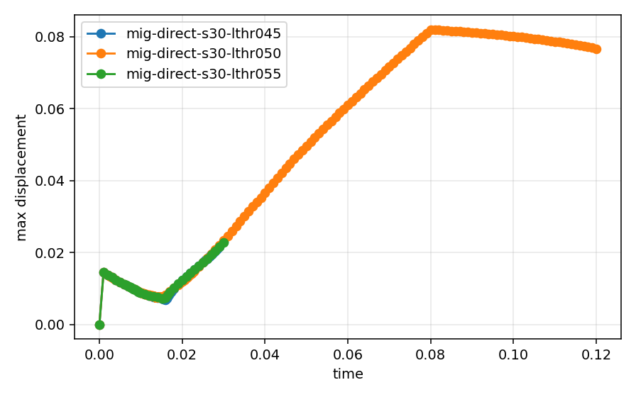
Min_J

Min_Je
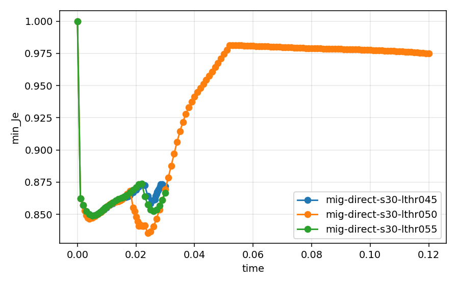
Max_Pf

Left/Right Lumen Balance
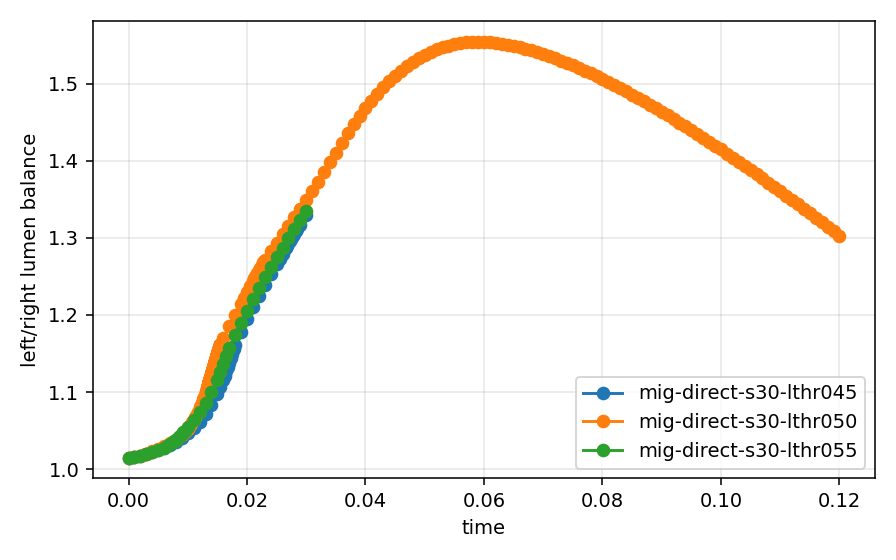
Total Energy (P-Form)
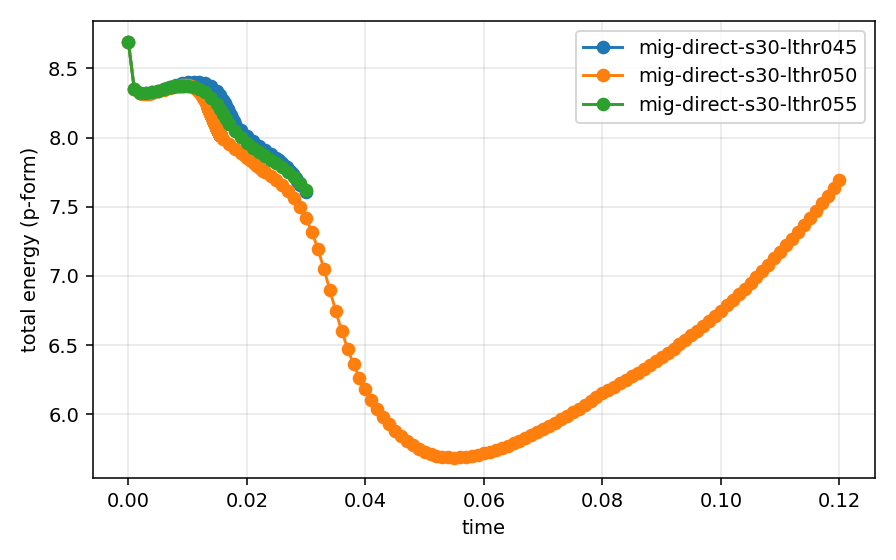
Theta-Form Energy
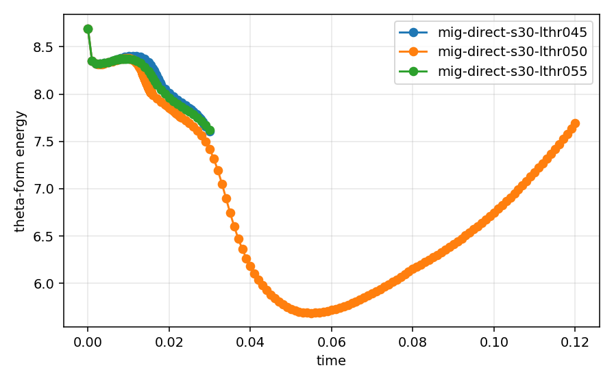
Cross-Form Energy
Lumen-Phase Measure
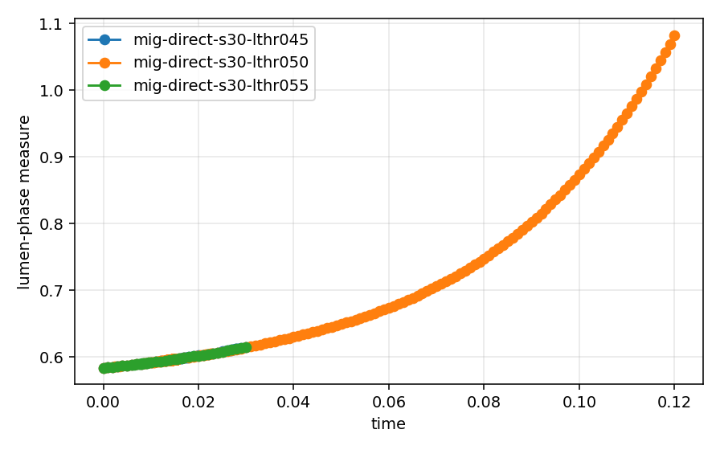
Split Iterations
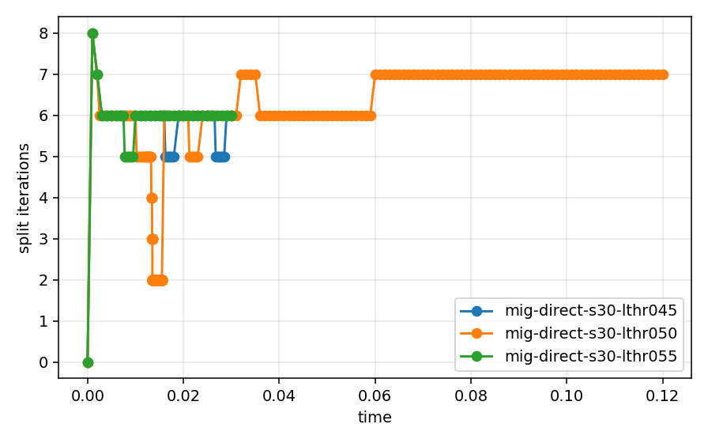
Mesh Cells
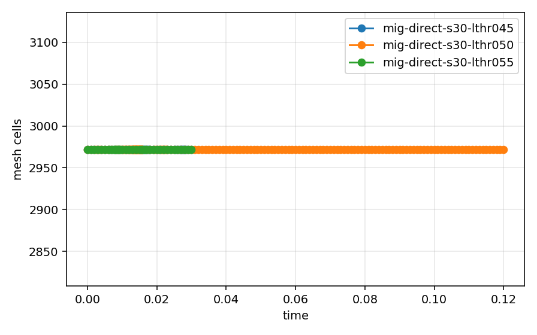
Flow Potential Range
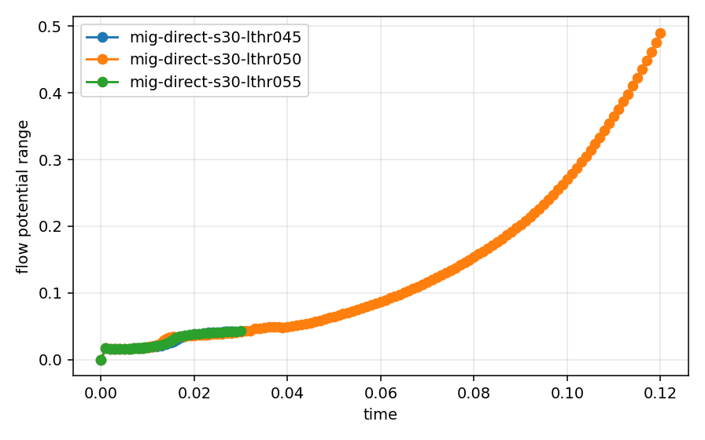
Effective Pressure Range
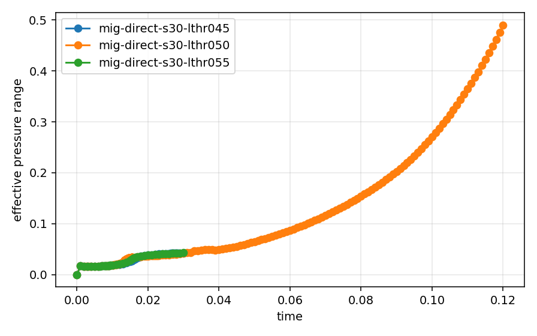
Theta_Eq Range
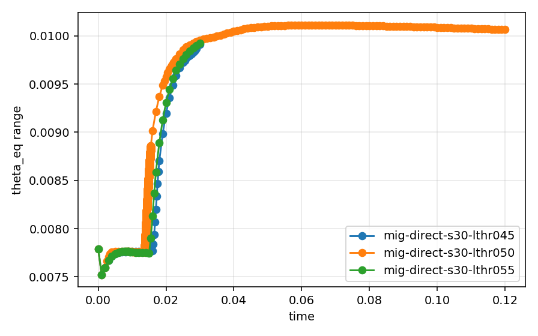
Storage Strain Range
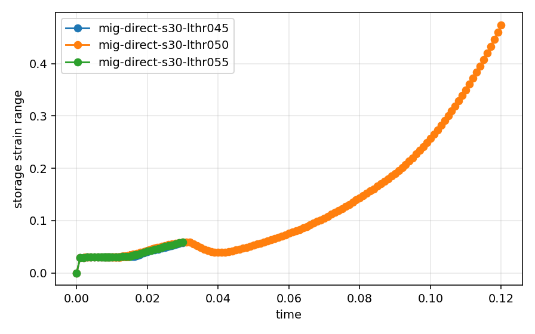
Wall Time
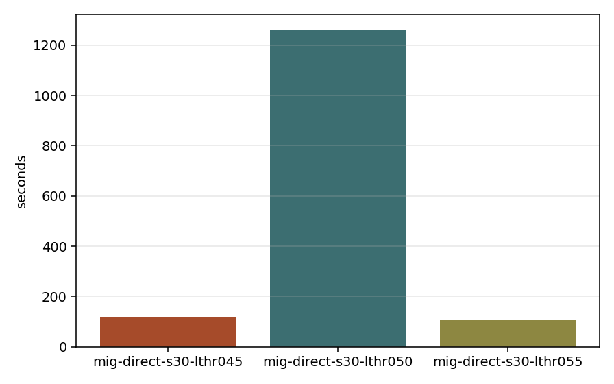
Artifacts
mig-direct-s30-lthr045
mig-direct-s30-lthr050
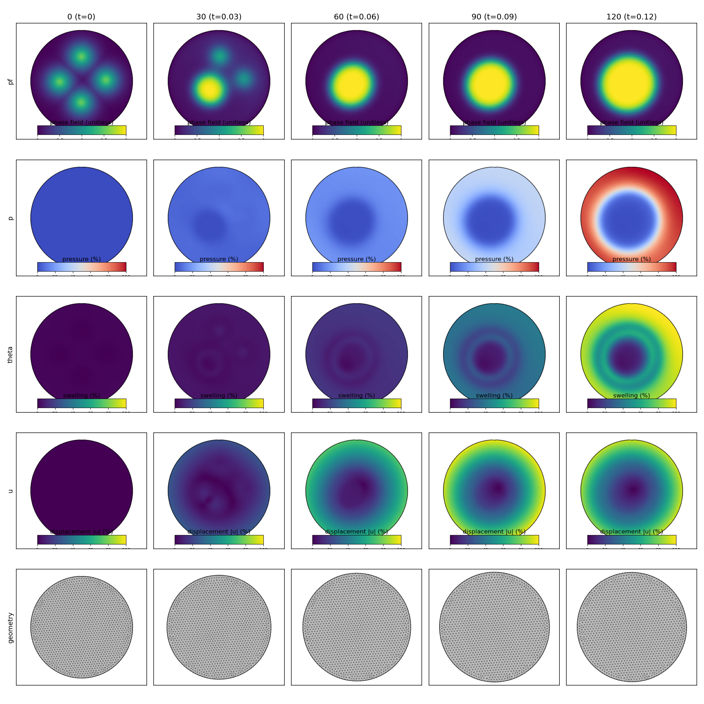
{kind=link}
{kind=link}